Ученикът рисува в Piskel в точния размер и слага файла на мястото от колона „Файл“. Играта сама я взима вместо временната.
След като сложите нови картинки, пуснете kartinki.bat, за да се обнови тази страница.
| Сега | Какво е | Файл | Размер | Къде е описано | Статус |
|---|
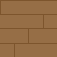 | Под от дъски | assets/floor.png | 64 × 64 | rules/krachma.md | временна |
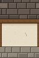 | Стена (цяла) | assets/wall.png | 64 × 96 | GAME_RULES 6 | нарисувана |
 | Врата | assets/door.png | 64 × 96 | rules/krachma.md | нарисувана |
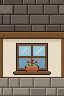 | Прозорец в стена | assets/window.png | 64 × 96 | rules/krachma.md | нарисувана |
 | Стена отгоре (странични и долни стени) - бесшевна във всички посоки | assets/wall_top.png | 64 × 64 | GAME_RULES 6 | нарисувана |
 | Вход в стена, гледан отгоре (праг, черга) | assets/door_top.png | 64 × 64 | GAME_RULES 6 | нарисувана |
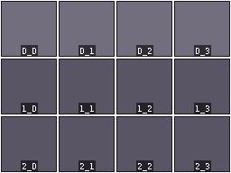 | Тайлсет стени: ъгли, горен ръб, лице (квадратчета 64×64) | assets/tilesets/walls.png | 256 × 192 | GAME_RULES 6 | временна |
 | Маса | assets/table.png | 64 × 64 | rules/krachma.md | нарисувана |
 | Маса (завъртяна, дъски по дължина) | assets/table_right.png | 64 × 64 | rules/krachma.md | нарисувана |
 | Стол (гледа към нас) | assets/chair_down.png | 64 × 64 | rules/krachma.md | временна |
 | Стол (с гръб към нас) | assets/chair_up.png | 64 × 64 | rules/krachma.md | временна |
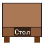 | Стол (гледа надясно) | assets/chair_right.png | 64 × 64 | rules/krachma.md | временна |
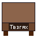 | Тезгях (парче) | assets/bar.png | 64 × 64 | rules/krachma.md | временна |
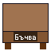 | Бъчва с напитка | assets/barrel.png | 64 × 64 | rules/krachma.md | временна |
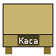 | Каса | assets/cash.png | 64 × 64 | rules/krachma.md | временна |
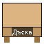 | Дъска за рязане | assets/cutting_board.png | 64 × 64 | rules/krachma.md | временна |
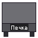 | Печка | assets/stove.png | 64 × 64 | rules/krachma.md | временна |
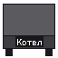 | Котел | assets/cauldron.png | 64 × 64 | rules/krachma.md | временна |
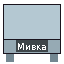 | Мивка | assets/sink.png | 64 × 64 | rules/krachma.md | временна |
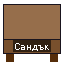 | Сандък | assets/chest.png | 64 × 64 | rules/krachma.md | временна |
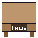 | Гише за кухнята | assets/counter_pass.png | 64 × 64 | rules/krachma.md | временна |
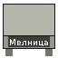 | Мелница (ръчна) | assets/mill.png | 64 × 64 | rules/krachma.md | временна |
 | Преса за грозде/плодове | assets/press.png | 64 × 64 | rules/krachma.md | временна |
 | Бъчва за ферментация | assets/ferment_barrel.png | 64 × 64 | rules/krachma.md | временна |
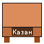 | Казан за ракия | assets/still.png | 64 × 64 | rules/krachma.md | временна |
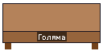 | Голяма маса | assets/table_big.png | 128 × 64 | rules/krachma.md | временна |
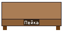 | Пейка | assets/bench.png | 128 × 64 | rules/krachma.md | временна |
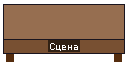 | Сцена за музиканта | assets/stage.png | 128 × 64 | rules/krachma.md | временна |
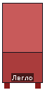 | Легло (стая за нощуване) | assets/bed.png | 64 × 128 | rules/krachma.md | временна |
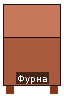 | Фурна | assets/oven.png | 64 × 96 | rules/krachma.md | временна |
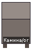 | Камина/огнище | assets/fireplace.png | 64 × 96 | rules/krachma.md | временна |
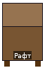 | Рафт с бутилки | assets/shelf.png | 64 × 96 | rules/krachma.md | временна |
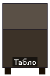 | Табло с менюто | assets/menu_board.png | 64 × 96 | rules/krachma.md | временна |
 | Чаша празна | assets/items/cup_empty.png | 32 × 32 | rules/krachma.md | временна |
 | Чаша пълна | assets/items/cup_full.png | 32 × 32 | rules/krachma.md | временна |
 | Чаша мръсна | assets/items/cup_dirty.png | 32 × 32 | rules/krachma.md | временна |
| Халба бира | assets/items/mug_beer.png | 32 × 32 | rules/krachma.md | временна |
| Чаша вино | assets/items/glass_wine.png | 32 × 32 | rules/krachma.md | временна |
| Чашка ракия | assets/items/glass_rakia.png | 32 × 32 | rules/krachma.md | временна |
| Чиния чиста | assets/items/plate_clean.png | 32 × 32 | rules/krachma.md | временна |
| Чиния мръсна | assets/items/plate_dirty.png | 32 × 32 | rules/krachma.md | временна |
| Купа чиста | assets/items/bowl_clean.png | 32 × 32 | rules/krachma.md | временна |
| Купа мръсна | assets/items/bowl_dirty.png | 32 × 32 | rules/krachma.md | временна |
 | Хляб | assets/items/bread.png | 32 × 32 | rules/krachma.md | временна |
| Сирене | assets/items/cheese.png | 32 × 32 | rules/krachma.md | временна |
 | Яйца | assets/items/eggs.png | 32 × 32 | rules/krachma.md | временна |
| Боб | assets/items/beans.png | 32 × 32 | rules/krachma.md | временна |
 | Лук | assets/items/onion.png | 32 × 32 | rules/krachma.md | временна |
 | Морков | assets/items/carrot.png | 32 × 32 | rules/krachma.md | временна |
 | Картоф | assets/items/potato.png | 32 × 32 | rules/krachma.md | временна |
| Брашно | assets/items/flour.png | 32 × 32 | rules/krachma.md | временна |
| Мляко | assets/items/milk.png | 32 × 32 | rules/krachma.md | временна |
| Кисело мляко | assets/items/yogurt.png | 32 × 32 | rules/krachma.md | временна |
| Домат | assets/items/tomato.png | 32 × 32 | rules/krachma.md | временна |
 | Краставица | assets/items/cucumber.png | 32 × 32 | rules/krachma.md | временна |
 | Чушка | assets/items/pepper.png | 32 × 32 | rules/krachma.md | временна |
| Подправки | assets/items/spices.png | 32 × 32 | rules/krachma.md | временна |
| Масло | assets/items/butter.png | 32 × 32 | rules/krachma.md | временна |
 | Олио | assets/items/oil.png | 32 × 32 | rules/krachma.md | временна |
| Сол | assets/items/salt.png | 32 × 32 | rules/krachma.md | временна |
 | Дърва | assets/items/firewood.png | 32 × 32 | rules/krachma.md | временна |
| Малц | assets/items/malt.png | 32 × 32 | rules/krachma.md | временна |
 | Хмел | assets/items/hops.png | 32 × 32 | rules/krachma.md | временна |
 | Грозде | assets/items/grapes.png | 32 × 32 | rules/krachma.md | временна |
| Плодове | assets/items/fruit.png | 32 × 32 | rules/krachma.md | временна |
 | Билки | assets/items/herbs.png | 32 × 32 | rules/krachma.md | временна |
| Струни | assets/items/strings.png | 32 × 32 | rules/krachma.md | временна |
| Шапка за бакшиш | assets/items/tip_hat.png | 32 × 32 | rules/krachma.md | временна |
 | Боб чорба (купа) | assets/items/dish_bean_soup.png | 32 × 32 | rules/krachma.md | временна |
| Пържени яйца | assets/items/dish_eggs.png | 32 × 32 | rules/krachma.md | временна |
 | Филия със сирене | assets/items/dish_bread_cheese.png | 32 × 32 | rules/krachma.md | временна |
 | Печени картофи | assets/items/dish_potatoes.png | 32 × 32 | rules/krachma.md | временна |
 | Баница | assets/items/dish_banitsa.png | 32 × 32 | rules/krachma.md | временна |
 | Шопска салата | assets/items/dish_salad.png | 32 × 32 | rules/krachma.md | временна |
| Айрян | assets/items/drink_ayran.png | 32 × 32 | rules/krachma.md | временна |
| Билков чай | assets/items/drink_tea.png | 32 × 32 | rules/krachma.md | временна |
 | Лимонада | assets/items/drink_lemonade.png | 32 × 32 | rules/krachma.md | временна |
| Боза | assets/items/drink_boza.png | 32 × 32 | rules/krachma.md | временна |
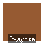 | Икона: Гъдулка | assets/ui/inst_gadulka.png | 64 × 64 | rules/krachma.md | временна |
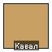 | Икона: Кавал | assets/ui/inst_kaval.png | 64 × 64 | rules/krachma.md | временна |
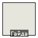 | Икона: Гайда | assets/ui/inst_gaida.png | 64 × 64 | rules/krachma.md | временна |
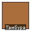 | Икона: Тамбура | assets/ui/inst_tambura.png | 64 × 64 | rules/krachma.md | временна |
 | Икона: Акордеон | assets/ui/inst_accordion.png | 64 × 64 | rules/krachma.md | временна |
 | Звезда (качество) пълна | assets/ui/star_full.png | 16 × 16 | rules/krachma.md | временна |
| Звезда (качество) празна | assets/ui/star_empty.png | 16 × 16 | rules/krachma.md | временна |
| Нота за лента 1 (мини игра Свирене) | assets/ui/note_lane1.png | 64 × 32 | rules/krachma.md | временна |
| Нота за лента 2 (мини игра Свирене) | assets/ui/note_lane2.png | 64 × 32 | rules/krachma.md | временна |
| Нота за лента 3 (мини игра Свирене) | assets/ui/note_lane3.png | 64 × 32 | rules/krachma.md | временна |
| Нота за лента 4 (мини игра Свирене) | assets/ui/note_lane4.png | 64 × 32 | rules/krachma.md | временна |
 | Нота за лента 5 (мини игра Свирене) | assets/ui/note_lane5.png | 64 × 32 | rules/krachma.md | временна |
| Фон на мини играта Свирене | assets/ui/rhythm_bg.png | 1024 × 576 | rules/krachma.md | временна |
| Димитър – собственик | assets/persons/sobstvenik.png | 64 × 64 | data/persons/sobstvenik.json | временна |
| Петър – кръчмар | assets/persons/krachmar.png | 64 × 64 | data/persons/krachmar.json | временна |
| Мария – готвач | assets/persons/gotvach.png | 64 × 64 | data/persons/gotvach.json | временна |
| Иван – сервитьор | assets/persons/servitior.png | 64 × 64 | data/persons/servitior.json | временна |
| Елена – чистач | assets/persons/chistach.png | 64 × 64 | data/persons/chistach.json | временна |
| Георги – снабдител | assets/persons/snabditel.png | 64 × 64 | data/persons/snabditel.json | временна |
 | Стоян – музикант | assets/persons/muzikant.png | 64 × 64 | data/persons/muzikant.json | нарисувана |
 | баба Стана – жител | assets/persons/baba_stana.png | 64 × 64 | data/persons/baba_stana.json | нарисувана |
 | баба Стана – ходене, 8 кадъра × 4 посоки (ред 1 надолу, 2 нагоре, 3 надясно, 4 наляво) | assets/persons/baba_stana_walk.png | 512 × 256 | data/persons/baba_stana.json | нарисувана |
| дядо Коле – жител | assets/persons/dyado_kole.png | 64 × 64 | data/persons/dyado_kole.json | временна |
| Борис – ловец | assets/persons/lovets_boris.png | 64 × 64 | data/persons/lovets_boris.json | временна |
| Ники – пътник | assets/persons/patnik_niki.png | 64 × 64 | data/persons/patnik_niki.json | временна |
 | Кавал - голям, отстрани на екрана в минииграта Свирене (платно 960x540) | assets/music/kaval.png | 192 × 432 | rules/krachma.md 10а | нарисувана |
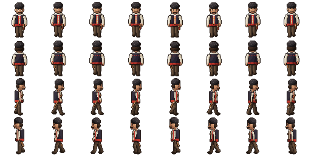 | Стоян (музикант) – ходене, 8 кадъра × 4 посоки (надолу, нагоре, надясно, наляво) | assets/persons/muzikant_walk.png | 512 × 256 | data/persons/muzikant.json | нарисувана |
 | Стоян свири на кавал, 2 кадъра (поза отпред) | assets/persons/muzikant_play.png | 128 × 64 | rules/krachma.md 10а | нарисувана |
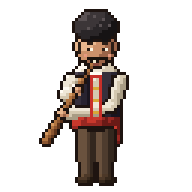 | Голям Стоян в минииграта Свирене (може и 192×288) | assets/music/muzikant_golyam.png | 192 × 192 | rules/krachma.md 10а | нарисувана |
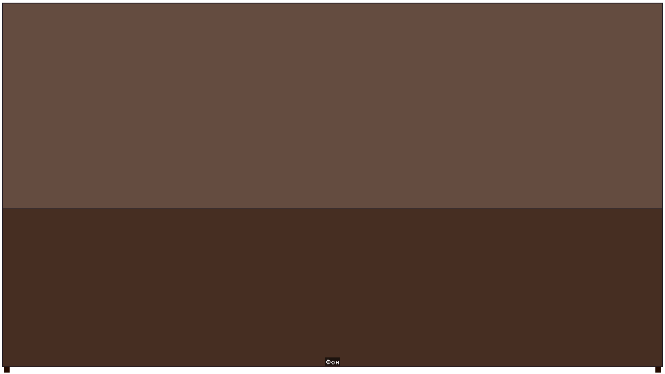 | Фон на минииграта Свирене (сцената в кръчмата, по-тъмна) | assets/music/fon_svirene.png | 960 × 540 | rules/krachma.md 10а | временна |
| Гриф за кавала (3 ленти): парче, което се повтаря и тече надолу | assets/music/grif_kaval.png | 224 × 64 | rules/krachma.md 10а | временна |
| Нота в 1-ва лента (червена, клавиш D) | assets/music/nota_0.png | 64 × 32 | rules/krachma.md 10а | временна |
| Нота във 2-ра лента (жълта, клавиш F) | assets/music/nota_1.png | 64 × 32 | rules/krachma.md 10а | временна |
 | Нота в 3-та лента (зелена, клавиш J) | assets/music/nota_2.png | 64 × 32 | rules/krachma.md 10а | временна |